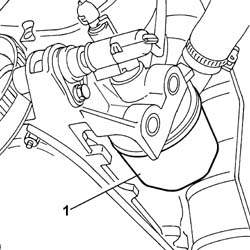
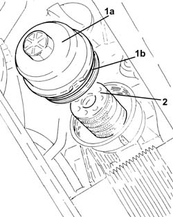

1084B30 engine oil filter r r
- Path
- Procedures > 10 ENGINE UNIT > 1084 ENGINE LUBRICATION SYSTEM > 1084B engine oil lubrication circuit > 1084B30 engine oil filter r r
- Kind
- repair procedure (removal / refitting; the operation number is the code)
- Applies to
- all engines; all production periods
- Interactive page
- https://sloeber94.github.io/elrnDB-fPnd/en/#/2752532
Applies to: engines: 1.1; all production periods
 Removing
Removing
 Refitting
RefittingPlace the car on a lift.
Raise the car.
Position a suitable container for collecting the engine oil.
1. Undo the oil cartridge and remove it.

Applies to: engines: 1.2 8v; all production periods
Removing
RefittingPlace the car on a lift.
Raise the car.
Position a suitable container for collecting the engine oil.
1. Undo the oil cartridge and remove it.
Applies to: engines: 1.3 JTD 16v; all production periods
Removing
RefittingUndo the bolts and remove the engine oil filter top cover.
1. Unscrew and remove the cartridge oil filter cover (1a) complete with O-ring (1b).
2. Withdraw and remove the cartridge oil filter.

Applies to: engines: 1.1; all production periods
Refitting
RemovingFit the cartridge and tighten in manually in the threaded housing.
Lower the vehicle.
Remove the vehicle from the ramp.
Applies to: engines: 1.2 8v; all production periods
Refitting
RemovingFit the cartridge and manually tighten it in the threaded housing.
Lower the vehicle.
Remove the vehicle from the ramp.
Applies to: engines: 1.3 JTD 16v; all production periods
Refitting
RemovingFit the cartridge engine oil filter in place.
Fit the cartridge engine oil filter cover complete with O-ring in place and tighten it.
Fit the cartridge engine oil filter upper protection in place and secure it using the bolts.